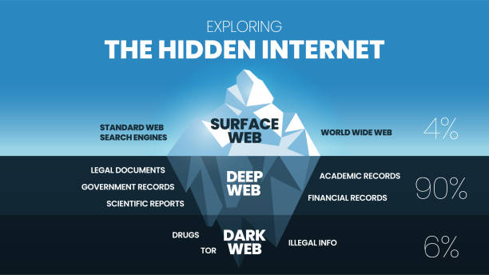

Exploring How the Dark Web Works
After high school, I want to study Engineering. Understanding computing, data, and networks helps prepare me for the future.
The Dark Web is a hidden part of the internet that isn’t accessible by normal browsers. It uses special protocols and encryption to allow anonymous communication between computing devices. Like all parts of the internet, data is split into packets and routed through routers across many possible paths, making it fault tolerant and scalable.
The foundation of digital communication comes from bits and bytes. A bit is a binary digit (0 or 1), and eight bits form a byte. This binary system powers everything, from analog data conversion to storing metadata about files. The Dark Web still uses the same building blocks of the internet, like IP, TCP, and HTTP, but hides them behind layers of encryption.
Just like lossless and lossy compression can change the quality of data, the Dark Web trades speed and convenience for secrecy and anonymity.
